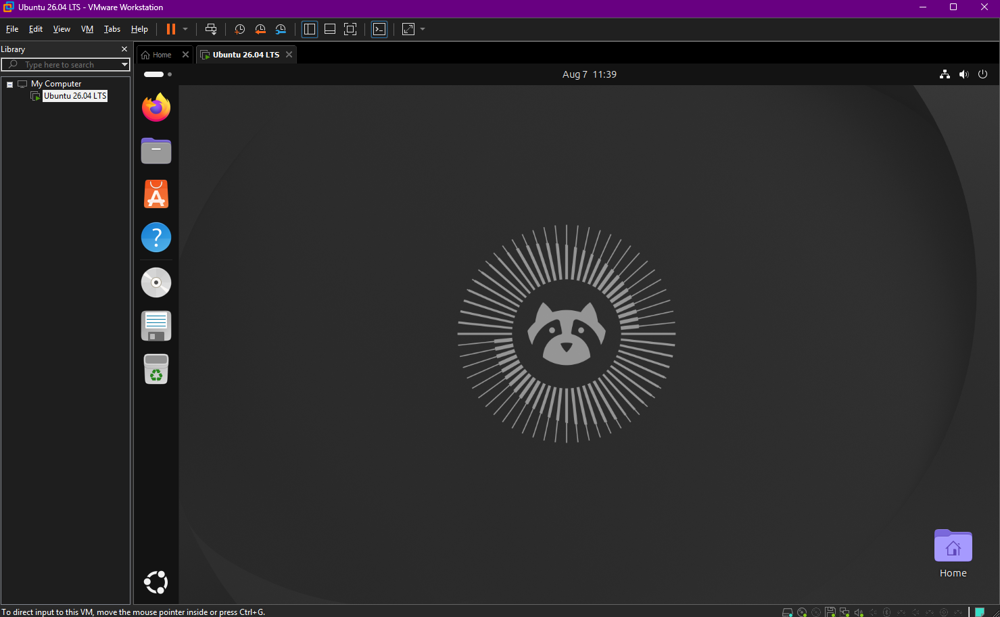
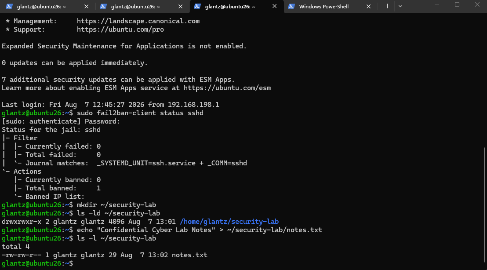
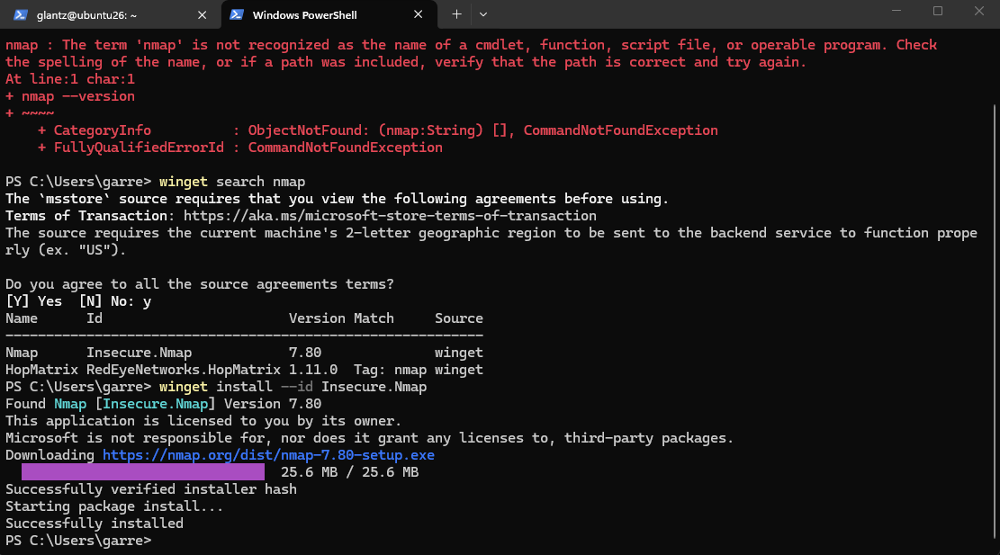
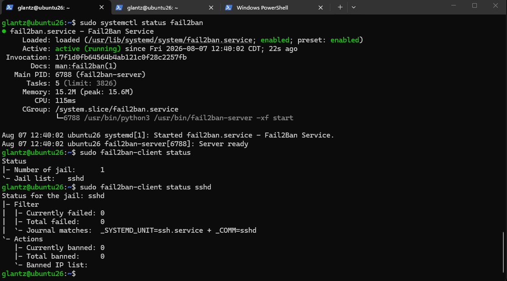
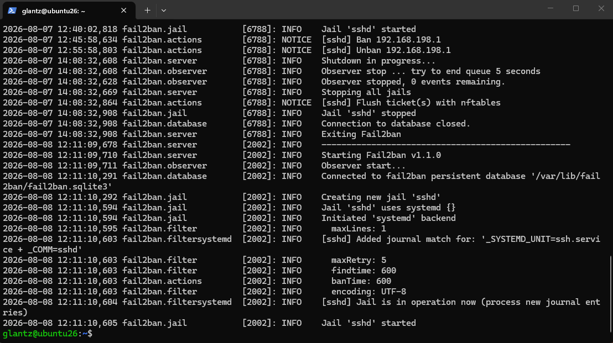
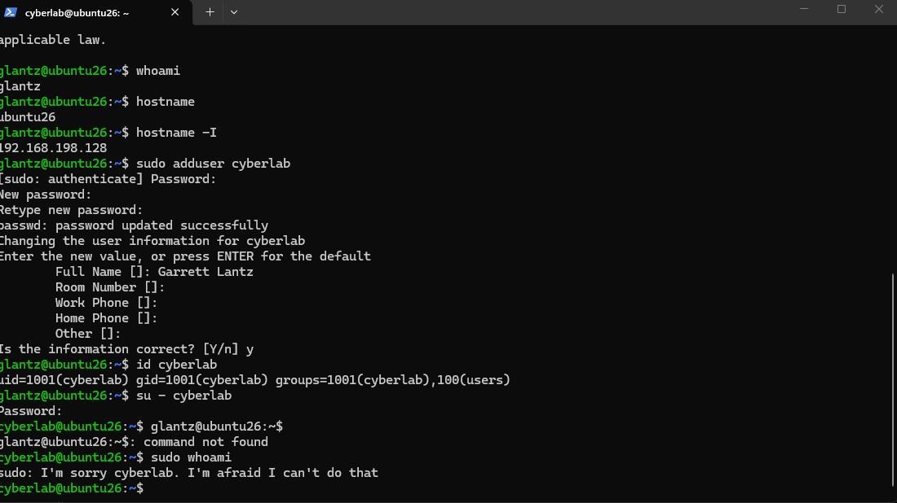
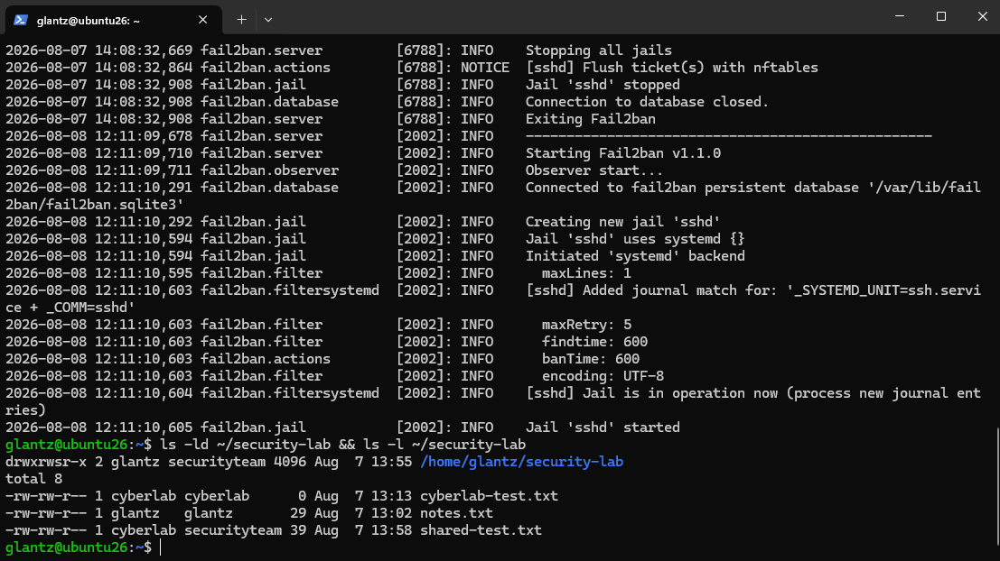
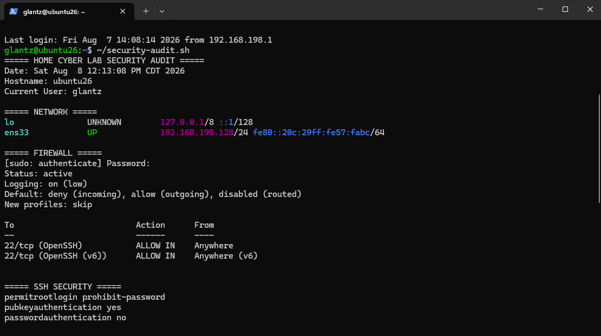
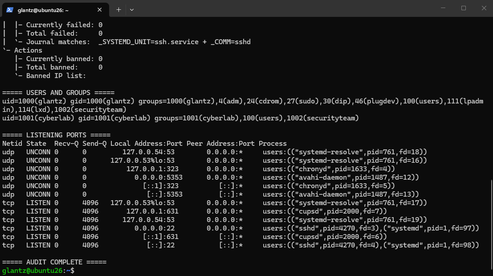

Cybersecurity Project
Home Cybersecurity Lab
Built and secured an Ubuntu Linux virtual machine in VMware to practice Linux administration, network security, access control, authentication, security monitoring, and Bash scripting.
Overview
Project Goals
The goal of this project was to build a small Linux security lab where I could practice system administration and defensive security skills in a controlled environment.
I configured an Ubuntu virtual machine, secured remote access, implemented firewall and authentication controls, tested network exposure from Windows, configured user access controls, monitored security events, and created a Bash script to audit the system's security configuration.
Lab Environment
Ubuntu Virtual Machine
I created an Ubuntu Linux virtual machine using VMware as the foundation for the lab. The virtual machine provided an isolated environment where I could configure services, change security settings, and test defensive controls without affecting my main Windows system.

Technologies Used
- VMware
- Ubuntu 26.04 LTS
- Windows PowerShell
- OpenSSH
- UFW Firewall
- Fail2Ban
- Nmap
- Linux users and groups
- Linux file permissions and ACLs
- Bash scripting
Network Security
Firewall and Network Validation
I configured UFW with a default-deny policy for incoming traffic while allowing outbound traffic. SSH on TCP port 22 was explicitly permitted so the Ubuntu system could still be administered remotely.
I tested connectivity between the Windows host and Ubuntu virtual machine to verify that the system remained reachable while the firewall was active.

Testing the system from Windows allowed me to validate the configuration from the perspective of another machine rather than relying only on information reported locally by Ubuntu.
Authentication
SSH Hardening
I installed and configured OpenSSH Server so the Ubuntu virtual machine could be administered remotely from Windows PowerShell.
I generated an ED25519 SSH key pair on Windows and configured the Ubuntu system to accept the public key. After verifying that key-based authentication worked, I disabled SSH password authentication.

I tested the hardened configuration by attempting to force a password-only SSH connection. The server rejected the connection with a public-key authentication error, confirming that password authentication had been disabled.
Threat Mitigation
Fail2Ban Protection
I installed Fail2Ban to provide additional protection for the SSH service. The SSH jail monitors authentication activity and can temporarily block systems that generate repeated failed login attempts.

The SSH jail was configured with a maximum of five failed attempts within a ten-minute window and a ten-minute ban period.
I tested the protection by banning the Windows host IP address. While the ban was active, new SSH connections from Windows timed out. After the ban period expired, SSH access was restored.

The Fail2Ban log recorded both the ban and automatic unban of
192.168.198.1. This confirmed that the protection was
functioning and that the temporary block was removed after the
configured ban period.
Access Control
Linux Users, Groups, and Permissions
I created a second Linux account named
cyberlab to practice managing permissions and
privileges between users.
The account was intentionally limited and could not use sudo. I also tested whether the account could access protected files belonging to another user.

The unauthorized file-access attempt returned
Permission denied, demonstrating that the Linux
permissions prevented access as intended.
Shared Security Group
I then created a shared securityteam group and added
both users to it. Group ownership, ACLs, and the setgid permission
were used to create a controlled shared workspace.
The setgid permission causes new files created inside the shared
directory to inherit the directory's group. This allowed a file
created by cyberlab to automatically belong to
securityteam instead of the user's personal group.

I verified the configuration by creating a file as
cyberlab and then modifying it from the
glantz account. This confirmed that members of the
shared security group could collaborate while access remained
controlled through Linux permissions.
Monitoring
Security Logs and Auditing
I reviewed Ubuntu journal logs to examine SSH activity and verify successful public-key authentication. I also inspected Fail2Ban logs to verify security events generated during testing.
As a final step, I created a Bash security-audit script that collects important security information from the system and displays it in a single report.
The script checks:
- Network configuration
- UFW firewall status and rules
- SSH security settings
- Fail2Ban SSH jail status
- User and group memberships
- Listening network ports and services

The first portion of the audit verifies the system's network configuration, confirms that UFW is active, and checks important SSH settings such as public-key authentication and disabled password authentication.

The second portion verifies Fail2Ban status, user and group memberships, and the services currently listening for network connections. This gave me a repeatable way to review several security controls from one script.
Skills Demonstrated
What I Practiced
- Linux system administration
- Virtual machine configuration
- Firewall configuration with UFW
- Network reconnaissance and validation
- SSH key-based authentication
- SSH service hardening
- Least privilege and access control
- Linux users and groups
- File permissions, ACLs, and setgid
- Security monitoring and log analysis
- Fail2Ban configuration and testing
- Bash scripting
Takeaway
What I Learned
This project gave me hands-on experience securing and administering a Linux system instead of only studying the concepts individually. I was able to configure security controls, test whether they worked, review the resulting logs, troubleshoot permission issues, and create a script that could be used to review the final configuration.
Building the lab also gave me an environment that I can continue using for future cybersecurity projects and testing.